Learned from feedback
Reinforcement-learning editing policies learn construction strategies from task rewards alone, with no level corpus, and reuse them on new targets, map sizes and shapes.
PCGRL · 2D & 3D · multi-agent
PhD candidate · NYU Tandon · Game Innovation Lab
I build agents that design game levels. My research asks where an agent's construction knowledge comes from — learned through reinforcement, carried over from language-model pretraining, or encoded in reusable tools — and how the generation process lets it put that knowledge to work.
Thesis Learning and Adapting Agents for Procedural Content Generation · advised by Julian Togelius
Research question
Building a level from a design goal means knowing which edits produce a traversable path, a solvable puzzle, or a requested gameplay experience. Authored example levels are often scarce, but game rules and an executable environment usually exist. My dissertation studies three sources of knowledge in that setting.
Reinforcement-learning editing policies learn construction strategies from task rewards alone, with no level corpus, and reuse them on new targets, map sizes and shapes.
PCGRL · 2D & 3D · multi-agent
Language models select editing tools and PCG algorithms while observing their effects. They follow numeric targets and open-ended instructions without task-specific training.
Agentic PCG · tool use
Generators, constructors and reusable level pieces hold knowledge the model no longer needs to have, and a harness decides which edits survive.
harness · quality-diversity
A recurring finding is that none of these sources is enough on its own. A learned policy needs the right observations, a pretrained model needs tools and feedback it can act on, and tools need a model that can pick among them.
Research arc
Five projects trace a path from learning editing policies through environmental feedback, to using pretrained knowledge through tools, to making that process reliable on local hardware. Two studies are in progress.
Extends PCGRL to Minecraft, where movement involves jumping and gravity. Editing policies learn recurring spatial constructions such as staircases and adapt them to many door configurations, with no authored levels.
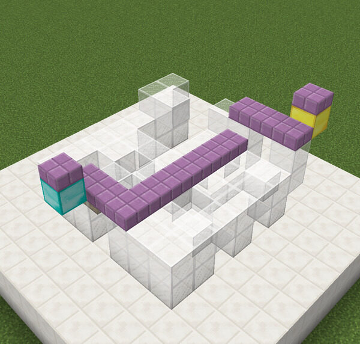
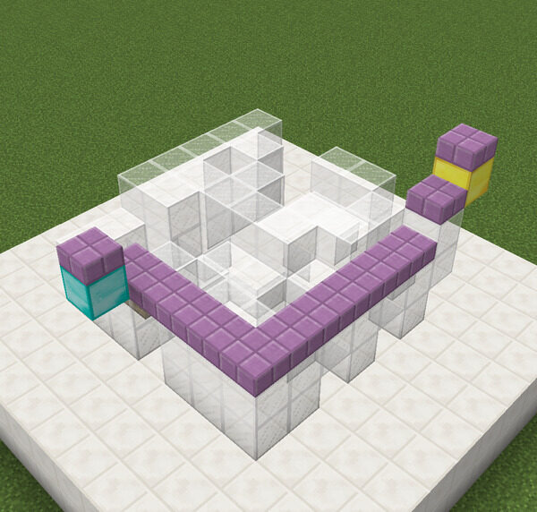
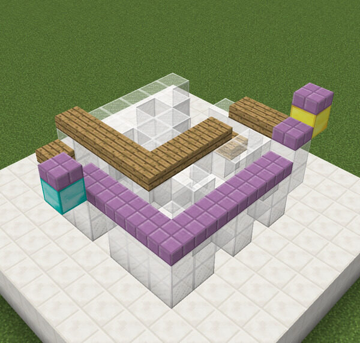
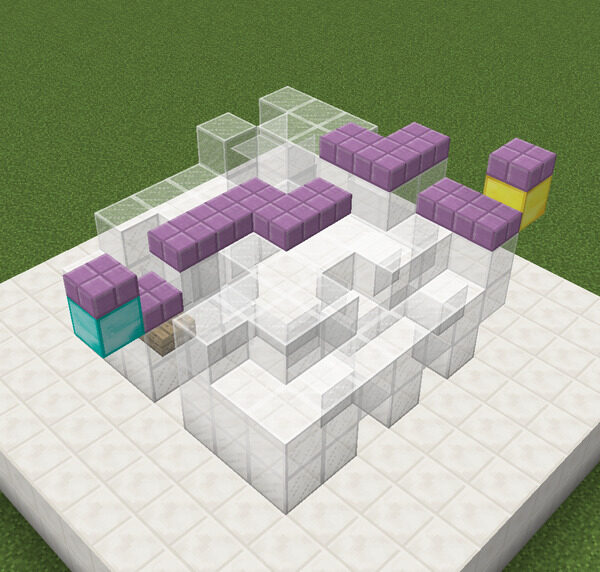
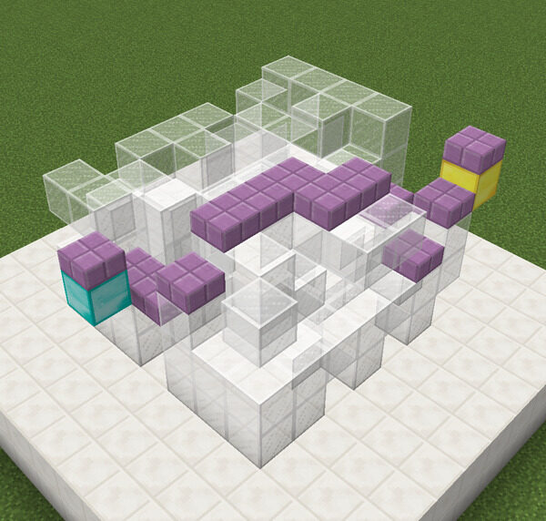
Connecting two doors in a 7×7×7 space through successive edits. The agent builds a staircase; purple marks the path.
A JAX implementation moves simulation and training onto the GPU. Varying observation size, randomizing map shapes and pinning key tiles shows that local observations generalize better to unseen maps: what an agent can see shapes which strategies it learns and reuses.
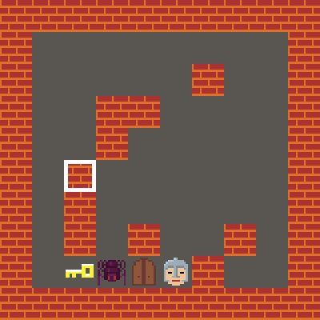
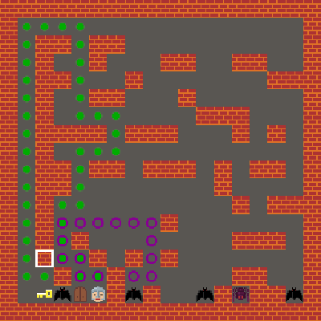
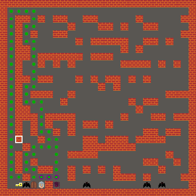
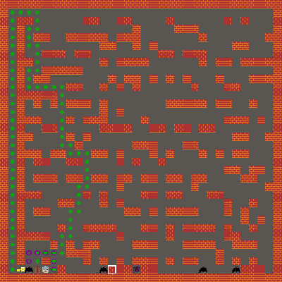
A policy trained on 16×16 maps with 3×3 local observations reuses its design pattern on smaller and larger maps.
Several agents with a shared policy and reward edit the same level, sharing an expensive global reward computation. When total actions are held constant some gains shrink, but benefits persist on out-of-distribution map shapes.
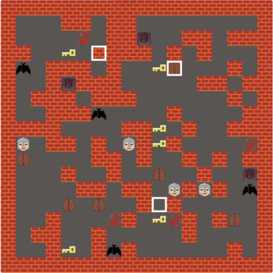
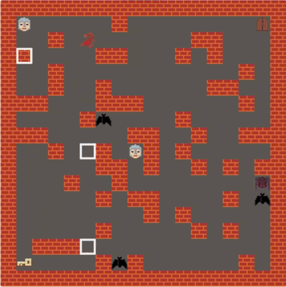
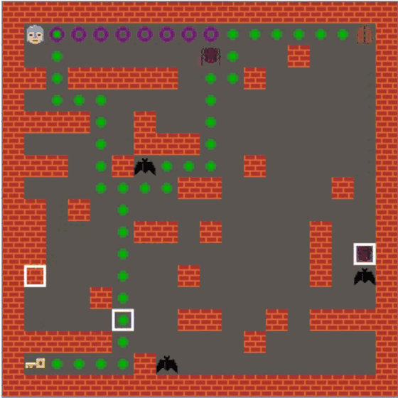
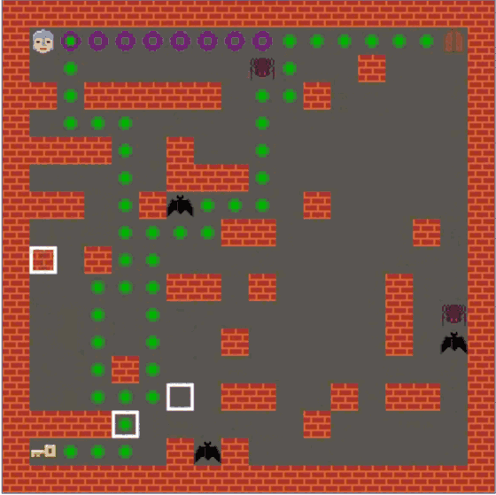
Multiple agents cooperatively edit a shared Dungeon level over one episode.
The framework at the center of my thesis. A language model observes a symbolic level and its measurements, proposes tool calls, and gets feedback after each one. Primitive edits and higher-level PCG algorithms share one interface, and an external objective decides whether each revision is kept. Computable targets and free-form language instructions can therefore drive the same process.
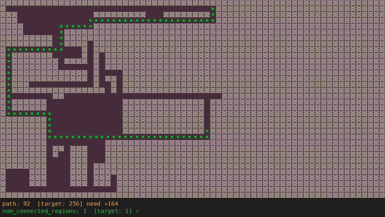
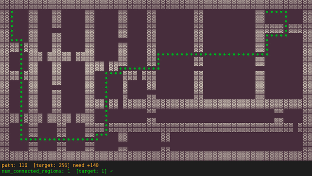
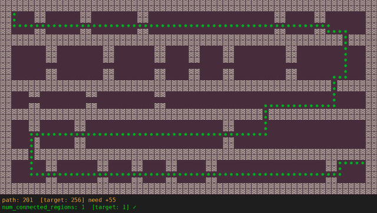
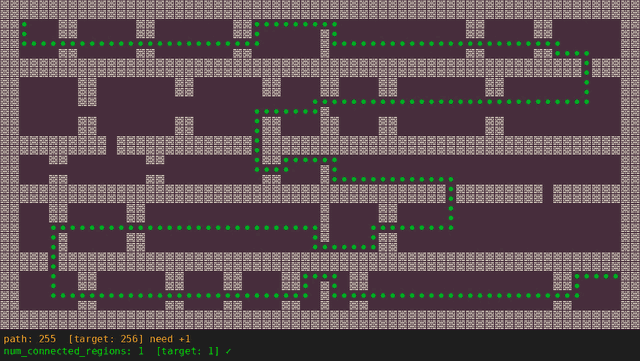
Gemini 2.5 Pro combines binary space partitioning generator calls with local edits to lengthen the path.
Local models often return incomplete tool calls or undo useful progress. An execution harness limits retries, decides which edits to keep and when to stop, and extracts numeric targets from language. None of this changes model weights. Tested Super Mario Bros. builders let the model interpret gameplay requests such as "collect five coins with a single jump".
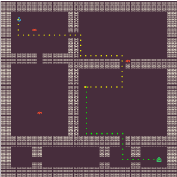
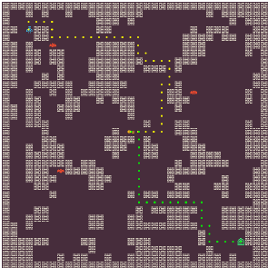
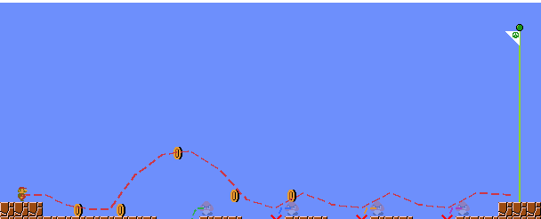
Publications
Under review · SSRN preprint
IEEE Transactions on Games, 18(3)
IEEE Conference on Games (CoG) 2024
arXiv:2305.18553
Foundations of Digital Games (FDG) 2022
Full list on Google Scholar.
News
About
I am a PhD candidate in Computer Science and Engineering at New York University Tandon School of Engineering, advised by Prof. Julian Togelius at the NYU Game Innovation Lab. Before that I earned an M.S. in Electrical Engineering at NYU and a B.S. in Optoelectronic Information Science and Engineering at Sun Yat-sen University, including an exchange semester at UC Berkeley.
I got into this field after watching Ready Player One: a world players could keep creating for themselves, at a scale no team of designers could author by hand. Today I work on agents that turn design goals, from numeric targets to plain-language requests, into playable levels. These could serve as creative tools for game makers and as environments for training other agents. Earlier I also worked on generating synthetic biometric data (fingerprints and irises).
Outside research I am a traveler, photographer and video editor.
Pronunciation “Ze-hua Jiang” — zuh-hwa jahng
我是纽约大学 Tandon 工程学院计算机科学与工程专业的博士候选人，在纽约大学游戏创新实验室跟随 Julian Togelius 教授做研究。此前我在纽约大学获得电子工程硕士学位，并在中山大学获得光电信息科学与工程学士学位，其间曾在加州大学伯克利分校交换。
我的研究方向是游戏中的程序化内容生成（PCG）：让智能体从设计目标出发构建可玩的关卡。我关注智能体的“构建知识”从何而来，包括通过强化学习从环境反馈中习得、借助大语言模型的预训练知识调用工具，以及封装在可复用工具里的知识，并研究生成流程如何让这些知识真正落地。
我也是一名旅行者、摄影师和视频剪辑师。欢迎随时与我联系！